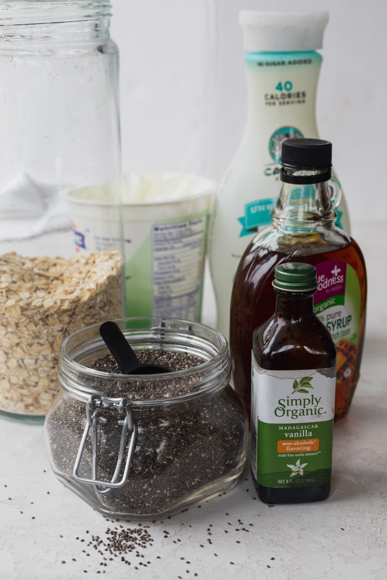
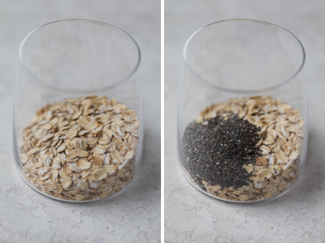
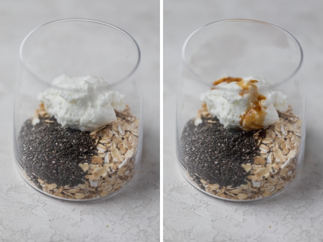
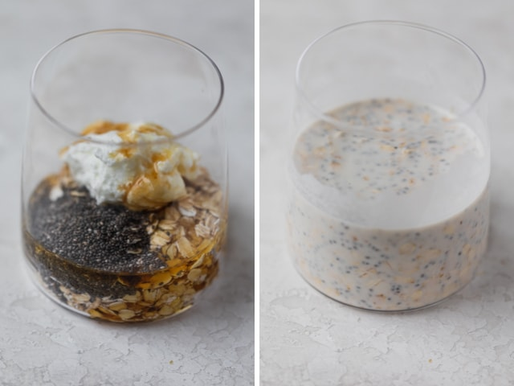
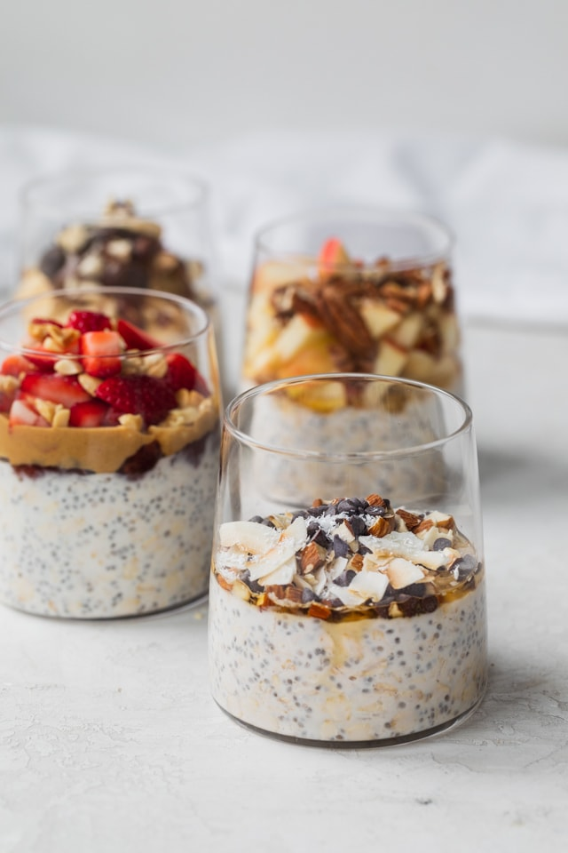

Easy Overnight Oats
This overnight oats recipe is a great healthy breakfast that you can prepare in advance and it can last all week. So it makes it a great meal prep idea for Sunday night to prepare for the work week!

Ingredients:
- Oats: This is really the only ingredient that’s non-negotiable. Make sure to use plain old-fashioned oats and not quick oats because the consistency is best with rolled oats. You can also use gluten-free oats.
- Milk: For the liquid part, you can actually make this with water! But it’s more common to use milk. You can use full fat, 2% or low-fat milk. You can also use plant-based milk like almond milk, coconut milk, cashew milk or oat milk.
- Chia Seeds (optional): These seeds are packed with tons of nutrition, and they help give the oats a pudding-like texture. So I always like to include them in my base recipe.
- Greek or vegan yogurt (optional): This gives the oats a tangy flavor, creamy texture and boost of protein.
- Vanilla Extract (optional): This enhances all the flavors that go into the overnight oatmeal as well as giving it sweetness without any sweetener.
- Sweetener (optional): Use honey or maple syrup to sweeten the mixture, especially because oats can be somewhat bland on their own.
- Toppings: This is where you can have some fun with fresh fruit, dried fruit, nut butters, nuts, seeds and spices (like cinnamon, nutmeg or cardamom). There are so many topping ideas and combinations, and I think that’s what makes this such a great versatile recipe!
How to make basic overnight oats?
It’s all about the ratios in my opinion to get the consistency you like. So I recommend you start with my suggested ratio below and then add more milk or use less milk until you find what works perfectly for you! Once you nail down the ratio of the basic overnight oats recipe, the sky’s the limit with the flavor combinations and toppings.
1 part oats + 1 part milk + 1/8 part seeds
To start, combine old fashioned oats and chia seeds. You can use a bowl, a mason jar or just some glass cups like I did here.

Next add the Greek or vegan yogurt and vanilla extract.

And then add the sweetener of choice and the milk. Then mix the overnight oats together until you see no clumps. Next, seal or cover with a lid, and chill in the fridge for at least 2 hours or overnight.

The next morning, grab a spoon, add your favorite toppings and dig in!

.png)
Source